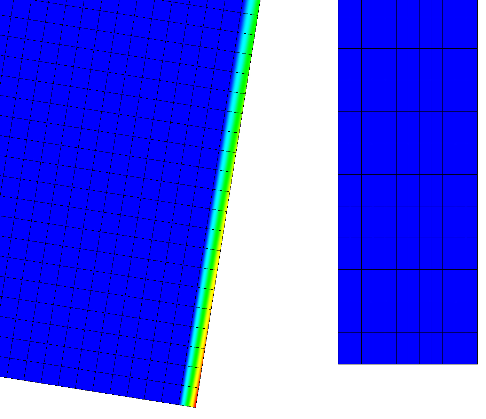

- paired_boundaryThe boundary to find the distance to.
C++ Type:BoundaryName
Description:The boundary to find the distance to.
- variableThe name of the variable that this object applies to
C++ Type:AuxVariableName
Description:The name of the variable that this object applies to
NearestNodeDistanceAux
The NearestNodeDistanceAux uses the geometric search system to find the shortest distance from a node where the AuxVariable is defined to a node on a different boundary. Normally, this object is used to find distances between two boundaries but can be used to find the distance from all nodes in one body to some boundary.

Distance to nearest node on opposite boundary is shown.
Description and Syntax
Stores the distance between a block and boundary or between two boundaries.
Input Parameters
- blockThe list of block ids (SubdomainID) that this object will be applied
C++ Type:std::vector
Description:The list of block ids (SubdomainID) that this object will be applied
- boundaryThe list of boundary IDs from the mesh where this boundary condition applies
C++ Type:std::vector
Description:The list of boundary IDs from the mesh where this boundary condition applies
- execute_onLINEAR TIMESTEP_ENDThe list of flag(s) indicating when this object should be executed, the available options include NONE, INITIAL, LINEAR, NONLINEAR, TIMESTEP_END, TIMESTEP_BEGIN, FINAL, CUSTOM, PRE_DISPLACE.
Default:LINEAR TIMESTEP_END
C++ Type:ExecFlagEnum
Description:The list of flag(s) indicating when this object should be executed, the available options include NONE, INITIAL, LINEAR, NONLINEAR, TIMESTEP_END, TIMESTEP_BEGIN, FINAL, CUSTOM, PRE_DISPLACE.
Optional Parameters
- control_tagsAdds user-defined labels for accessing object parameters via control logic.
C++ Type:std::vector
Description:Adds user-defined labels for accessing object parameters via control logic.
- enableTrueSet the enabled status of the MooseObject.
Default:True
C++ Type:bool
Description:Set the enabled status of the MooseObject.
- seed0The seed for the master random number generator
Default:0
C++ Type:unsigned int
Description:The seed for the master random number generator
- use_displaced_meshTrueWhether or not this object should use the displaced mesh for computation. Note that in the case this is true but no displacements are provided in the Mesh block the undisplaced mesh will still be used.
Default:True
C++ Type:bool
Description:Whether or not this object should use the displaced mesh for computation. Note that in the case this is true but no displacements are provided in the Mesh block the undisplaced mesh will still be used.
Advanced Parameters
Input Files
- test/tests/variables/block_aux_kernel/block_aux_kernel_test.i
- test/tests/geomsearch/quadrature_nearest_node_locator/qnnl_ad.i
- test/tests/geomsearch/nearest_node_locator/adapt.i
- test/tests/geomsearch/fake_block_to_boundary/fake_block_to_boundary.i
- test/tests/geomsearch/quadrature_nearest_node_locator/quadrature_nearest_node_locator.i
- test/tests/geomsearch/nearest_node_locator/nearest_node_locator.i